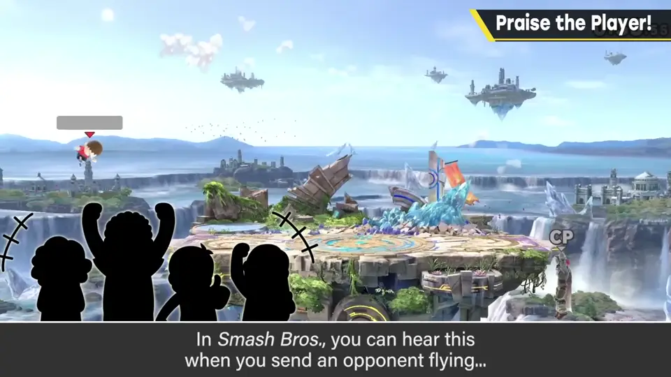
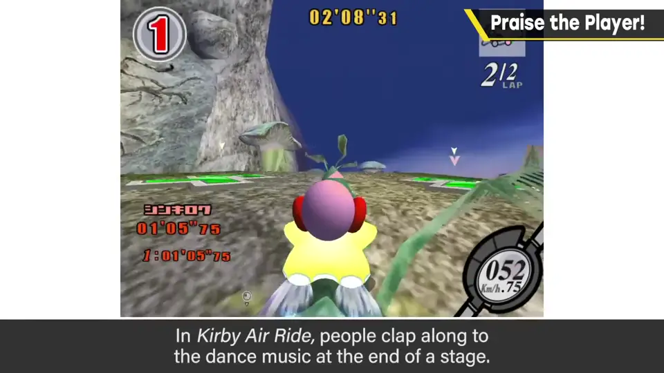
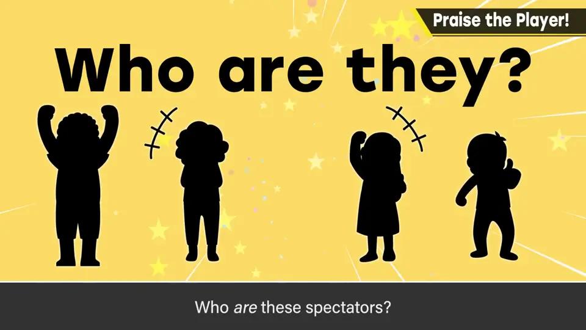
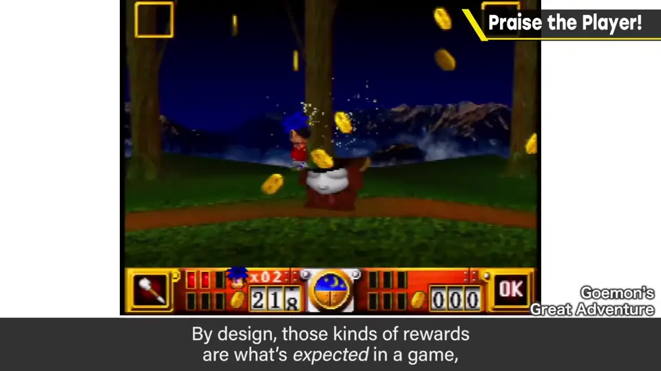
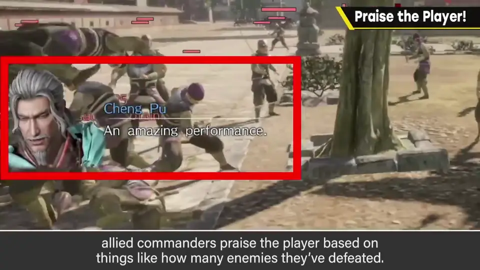
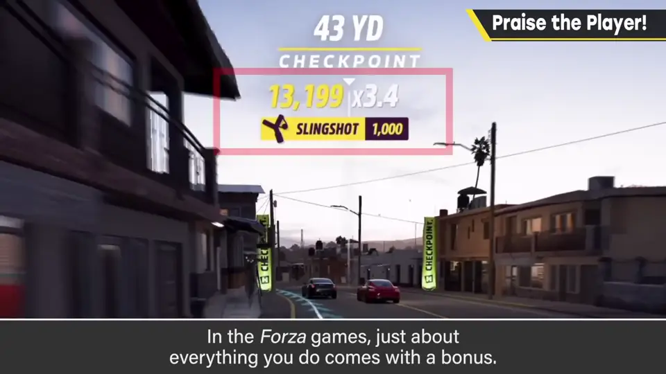
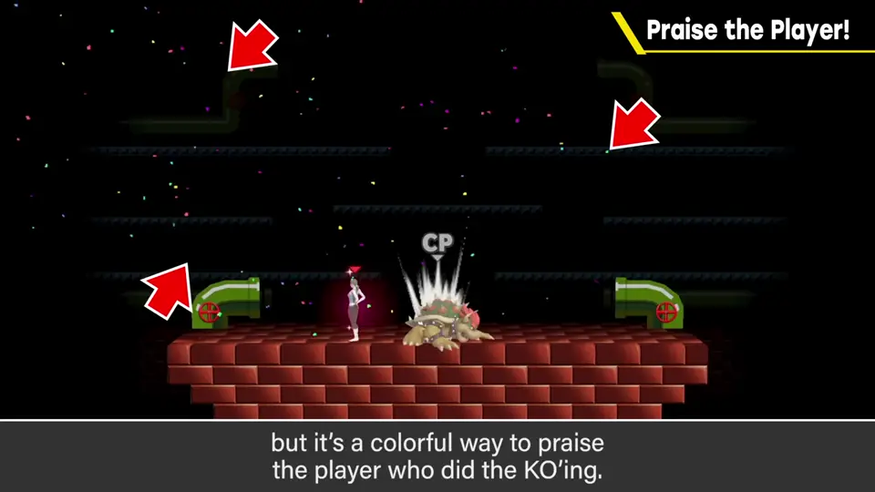

速览
樱井的很多作品里都有类似欢呼的东西：《大乱斗》大力击飞对手、击坠、胜利画面、在崖边勉强抓住时，观众会悄悄发出欢呼；《卡比的空中滑翔》过关舞的音乐里还有跟着节拍的拍手声——这到底是谁在拍？因为游戏是玩乐，对玩家的好行为给予夸奖很重要。单纯赚到东西、能通关也算夸奖要素，但只有这些有点不够；而且给报酬本来只是游戏的惯例，并不是从「夸奖」的角度设定的。《真·三国无双》中友军武将会按击破数等狠夸玩家；《Forza》里几乎所有行为都有奖励——跑得漂亮也好、撞得稀烂也好。这类褒奖要素有效，尽量加入。《大乱斗 特别版》在失误的爆炸里混入了纸屑：从失误的角度看很怪，但这是华丽地夸奖击坠一方的特效。在各自的游戏里，不要单纯表现理所当然的事件，而要构思顺着玩家心情或能夸张化的演出——直接或间接地把玩家夸上天吧。
1. 樱井游戏里的欢呼 0:03
樱井的游戏里，相当多作品都加入了类似欢呼的东西。《大乱斗》里大力击飞对手、击坠时、胜利画面，以及在崖边千钧一发抓住时，观众的欢呼会悄悄响起。

《卡比的空中滑翔》里，过关舞的音乐还配着拍手声。——这到底设定成谁在拍手？


2. 报酬不等于夸奖 0:50
单纯赚到东西、能够过关，也可以说是夸奖的要素，但只有这些就有点不够。说到底，给报酬只是游戏惯例上这么做，并不是从「夸奖」这个角度设定的。

3. 其他游戏的褒奖 1:18
- 《真·三国无双》等：友军武将会根据击破数等，把玩家夸个不停；
- 《Forza》：几乎所有行为都有奖励——跑得漂亮也好、撞得稀烂也好，总之都有奖励。


这类褒奖要素是有效的，应该积极加入。
4. 失误爆炸里的纸屑 1:47
《大乱斗 特别版》在玩家失误（被击坠）时的爆炸里，混入了纸屑。从「失误」的角度看，这是非常奇怪的表现；但它是华丽地夸奖击坠一方的特效。

自测题
1. 为什么说「给报酬」不等于「夸奖玩家」？
报酬只是游戏的惯例，并非从夸奖玩家的角度设计；只有它会有些不够。 1:03
2. 《大乱斗》里有哪些悄悄的「夸奖」？
大力击飞、击坠、胜利画面、崖边险抓时观众会响起欢呼。 0:14
3. 为什么《大乱斗 特别版》在失误爆炸里加纸屑？
从击坠者的角度华丽地夸奖他——顺着玩家心情的演出。 1:47